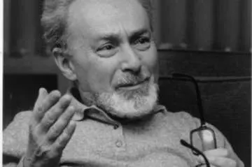

Il giorno della memoria - 27 gennaio
Oggi è una giornata particolare per tantissime persone che nel 1945 furono liberati fa Auschwitz, il campo di concentramento. Questo giorno fin da quando stavo a scuola ho avuto sempre interesse nel capire realmente cosa è successo in quei campi tanto atroci. .Ci sono due poesie che ogni volta che le leggo mi intristisco forse perché mi posso solo immaginare come si sono sentite tutte quelle persone che senza un reale motivo si sono visti portare via dalle loro case, abitudini e messi nei forni crematori. .Bambini,adulti,donne,anziani che si sono trovati senza niente e senza vestiti nel vero senso della parola. .La prima poesia narra di un paio di scarpette rosse di un bambino messe in cima ad un mucchio di migliaia di altre scarpe. .Questo semplice mucchio di scarpe voleva dire che erano tutte persone morte già nei forni :(

Un paio di scarpette rosse
C’è un paio di scarpette rossenumero ventiquattro
quasi nuove:
sulla suola interna si vede ancora la marca di fabbrica
“Schulze Monaco”.
C’è un paio di scarpette rosse
in cima a un mucchio di scarpette infantili
a Buckenwald
erano di un bambino di tre anni e mezzo
chi sa di che colore erano gli occhi
bruciati nei forni
ma il suo pianto lo possiamo immaginare
si sa come piangono i bambini
anche i suoi piedini li possiamo immaginare
scarpa numero ventiquattro
per l’ eternità
perché i piedini dei bambini morti non crescono.
C’è un paio di scarpette rosse
a Buckenwald
quasi nuove
perché i piedini dei bambini morti
non consumano le suole.Joyce Lussu
C'è tutta la tristezza dell'autore in questi versi che riesce a trasmettere tutto il suo stato d'animo anche a chi,dopo anni, legge queste righe. . Pensare che un piccolo esserino indifeso e senza colpa (come tanti e tanti bambini) deve morire per un fatto di cosa? perché era ebreo :( Sono anni che leggo, guardo documentari e non riesco ancora a trovare una spiegazione che possa reggere un minimo tutto questo crimine. .Leggo da anni ormai una poesia che tutte le volte mi fa lo stesso effetto. .La celebre e oramai conosciutissima poesia di Primo Levi - Se questo è un uomo. .

Se questo è un uomo
Voi che vivete sicuriNelle vostre tiepide caseVoi che trovate tornando a seraIl cibo caldo e visi amici:Considerate se questo è un uomo,Che lavora nel fangoChe non conosce paceChe lotta per mezzo paneChe muore per un sì o per un no.Considerate se questa è una donna,Senza capelli e senza nomeSenza più forza di ricordareVuoti gli occhi e freddo il gremboCome una rana d'inverno.Meditate che questo è stato:Vi comando queste parole.Scolpitele nel vostro cuoreStando in casa andando per via,Coricandovi alzandovi:Ripetetele ai vostri figli.O vi si sfaccia la casa,La malattia vi impedisca,I vostri nati torcano il viso da voi.Primo Levi
Chi meglio di lui poteva parlare di quell'olocausto. .
Lui è uno dei sopravvissuti ad Auschwitz poiché era stato mandato nei campi da lavoro e quindi serviva e finché è durato questo sterminio lui è stato costretto a stare lì.
In questa poesia si arrabbia e si rivolge a tutte quelle persone che stavano a casa e non facevano niente per cercare di smantellare tutto. .
Si legge la rabbia, la bestemmia finale suggerita dall'esasperazione del momento. .
Il dolore di vedere uomini e donne morire davanti i suoi occhi e lui obbligato a lavorare e non poter fare niente . .
Questa poesia è forse l'esempio dello stato d'animo di tutte quelle povere anime morte ingiustamente. .
Non dimentichiamo queste anime solo perché non eravamo in quei tempi,perché siamo di una generazione che non ha pensieri,ricordiamo perché tutto questo non deve mai più accedere ne per mano di un pazzo come Hitler ne per altri mani. .perché ogni anima è un dono che sia ebreo,africano,americano,italiano o marocchino. .